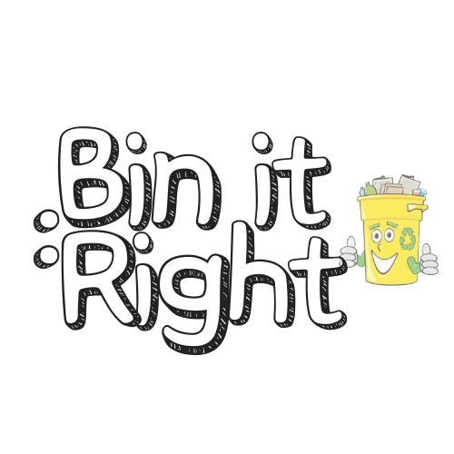
Understanding waste segregation is the first step towards a cleaner planet!
Press "Enter" to
see the next bin.
Use the Green Bin for wet and biodegradable waste. This bin helps in composting and recycling organic materials.
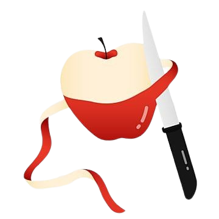
Vegetable Scraps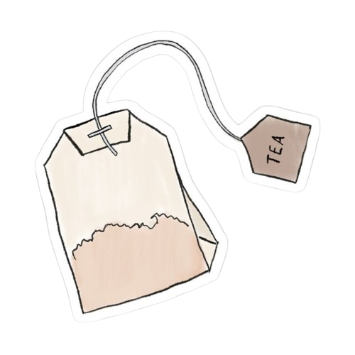
Tea Bags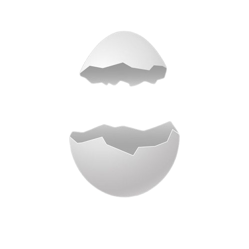
Egg ShellsDispose of dry and recyclable materials in the Blue Bin. These items can be processed and reused to reduce waste.
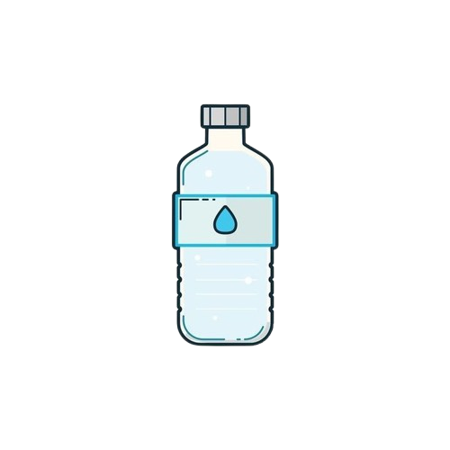
Plastic Bottles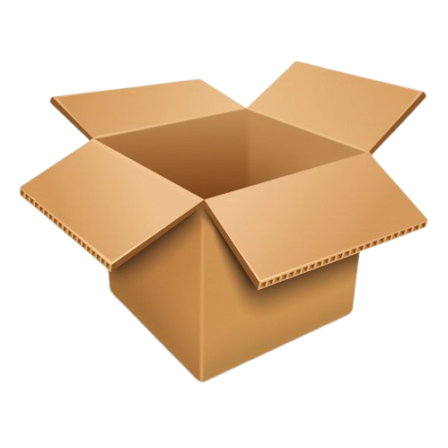
Cardboard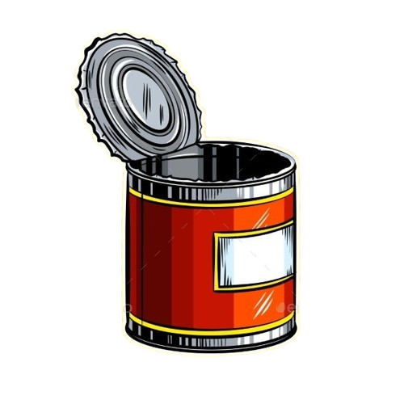
Tin CansHazardous waste goes into the Red Bin. Proper disposal prevents harm to the environment and human health.
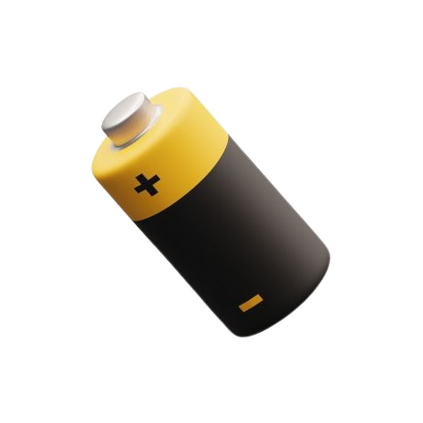
Batteries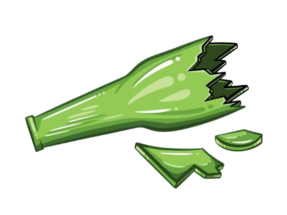
Broken Glass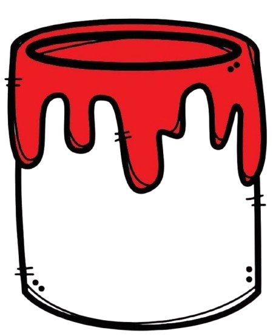
Paint Cans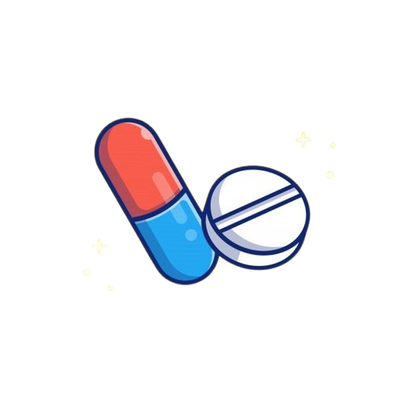
Expired MedicinesUse the Black Bin for non-recyclable and landfill waste. These items cannot be composted or recycled.
Styrofoam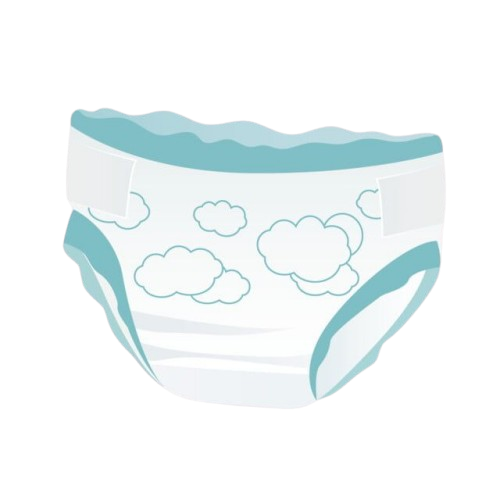
Used Diapers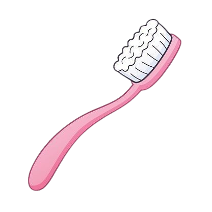
Old Toothbrushes